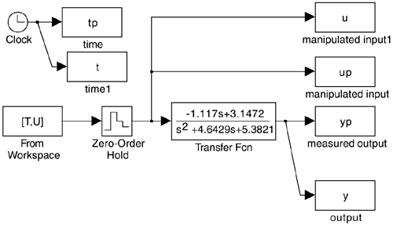

Appendix 4.1: Files Used to Generate Example 4.4

% use PRBS to estimate a discrete model of the vdv reactor
%
T = 0:0.25:5; % time vector (row)
T = T'; % time vector (column)
seed = [3;0.5]; % seed for noise generation
randn('state',seed); % using the same seed each time
uu = 0.5 1 0.25*randn(length(T),1); % mean of 0.5 with variance
% of 0.25
U = 2*round(uu)-1; % creates PRBS with -1 and 1 values
%
sim('est_vdv'); % runs simulation of linear van de vusse
% diagram
figure(1); % plot input-output data
subplot(2,1,1),plot(tp,yp,'k',t,y,'ko');
xlabel('time, min'), ylabel('y')
title('PRBS estimation example')
subplot(2,1,2),plot(tp,up,'k'); xlabel('time, min'),ylabel('u')
axis([0 5 -1.1 1.1])
% % generate phi matrix for estimation
for j = 4:22;
phi(j-3,:) = [y(j-2) y(j-3) u(j-2) u(j-3)];
end
%
theta = inv(phi'*phi)*phi'*y(3:21) % estimate parameters
%
num = [theta(3) theta(4)]; % numerator of discrete transfer function
den = [1 -theta(1) -theta(2)]; % denominator of discrete transfer function
sysd = tf(num,den,0.25) % create discrete tf object
tzero(sysd) % calculate zeros
pole(sysd) % calculate poles
syszpk = zpk(sysd) % zero-pole-k form
|